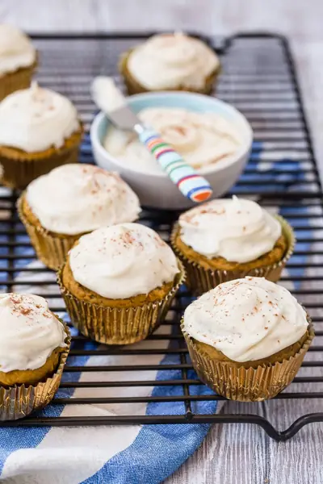

Pumpkin Muffins with Cream Cheese Frosting

Ingredients
- 1 1/2 cups all purpose flour
- 2 teaspoons baking powder
- 1/2 teaspoon baking soda
- 1/2 teaspoon kosher salt
- 1 1/2 teaspoons pumpkin pie spice
- 6 tablespoons unsalted butter, (melted)
- 3/4 cup brown sugar, (packed)
- 1 cup pumpkin purée
- 1 large egg
- 1/4 cup milk
- 1 teaspoon vanilla extract
- 4 ounces cream cheese, (softened)
- 4 tablespoons unsalted butter, (softened)
- 1 cup confectioner's sugar
- 1 teaspoon vanilla extract
Steps
- Preheat oven to 400°F.
- Place the first 5 ingredients in a bowl and whisk to combine.
- In a separate bowl whisk the remaining ingredients.
- Add the dry ingredients into the wet and whisk until just combined.
- Pour into greased muffins cups 3/4 full.
- Bake for 20 minutes. Allow to cool before frosting.
- Combine all ingredients and beat for 1-2 minutes, until fluffy. Frost cupcakes and serve!
Recipe by Weelicious, from Weelicious. Saved here for personal use; the original has the full notes, tips and photos. Open original